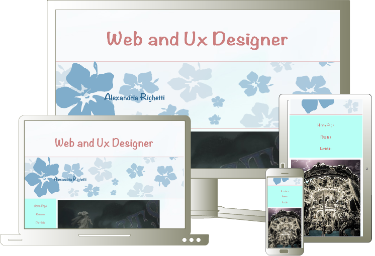
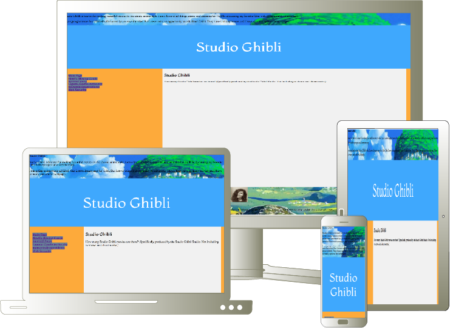

The purpose of this design was to re-imagine the client's brand while still holding the values. Simplicity, elegance, and modernism were the defining factors.
A website was requested to showcase an artist's selected works for a showcase. Images were given center stage around a colorful backdrop reflecting the artists spirit.
This fan-website was made as a passion project. It demonstrates working within javascript and creating functions for internet security, questionairs, and creating cookies from site visits.